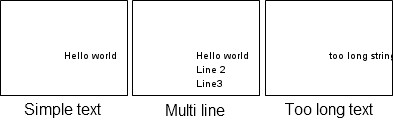
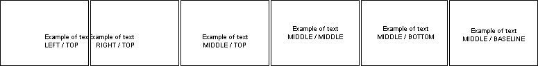
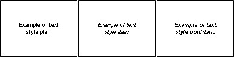
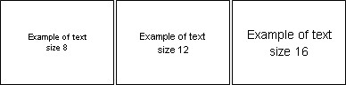
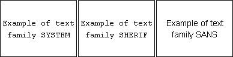
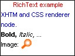
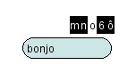

Shape node is used to draw a text.
Use geometry field of Shape node with values:
Draw a simple text with Text node.
Note:
Use internationalization functions for all text.
Example, display "Hello world" text:
We can draw a multi line text with Text node.
Replace "geometry Text { string ["Hello world"] }" by "geometry Text { string ["Hello world" "Line 2" "Line3"] }".
But a long text is not fully visible.
For example, replace text node by "Text { string ["too long string. End of text is not visible."]".

Text node is easy to use, but, it is restricted.
We can use WrapText node to advanced features.
WrapText node display text using automatic wrap
to fit in maxWidth pixels width and using a maximum of maxLines lines of text.
WrapText node interface:
See WrapText node documentation for more information about fields.
We can display previous text with the WrapText node.
We can define the font style for Text node and
WrapText node via the fontStyle field.
FontStyle node interface:
See FontStyle node documentation for more information about fields.
Example of FontStyle node:
Text alignment examples (justify field):

Text style examples (style field):

Text size examples (size field):

Text font examples (family field):

RichText node is a XHTML renderer (with CSS support).
We can display complex document (style, color, picture, ...).
See RichText node documentation for more information about this node.
Example of RichText node :

Source code:
We use style field to define CSS style.
We use string field to define document (XHTML).
Mobile Widgets implement text components (via prototypes).
Note:
Prototypes can change between Mobile Widgets and Tiny Mobile Widgets versions.
TextField prototype interface:
Example with TextField prototype:

ScrollableText prototype interface:
See ScrollableText prototype documentation.
To create font, use fontExtractor utility (present in SDK folder,
/tools/compiler/win for Windows, /tools/compiler/lin for Linux
and /tools/compiler/mac for Mac).
usage:
Example:
The TFD file (textual font description) describe the font mapping.
Format:
example:
To use the personal font, we use the =family= attribute of FontStyle node: